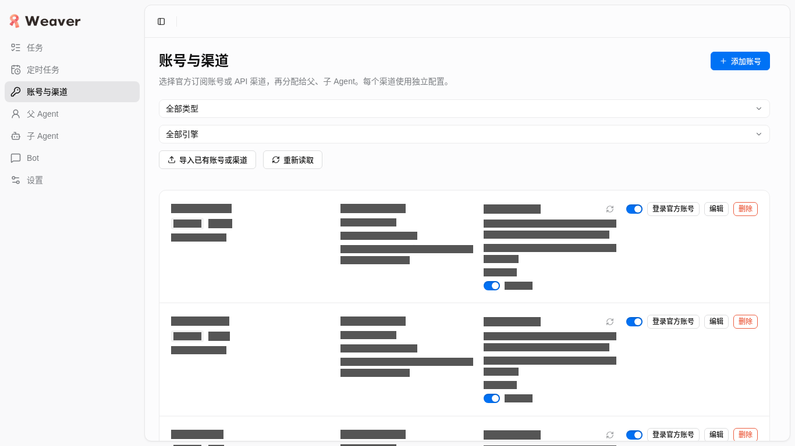
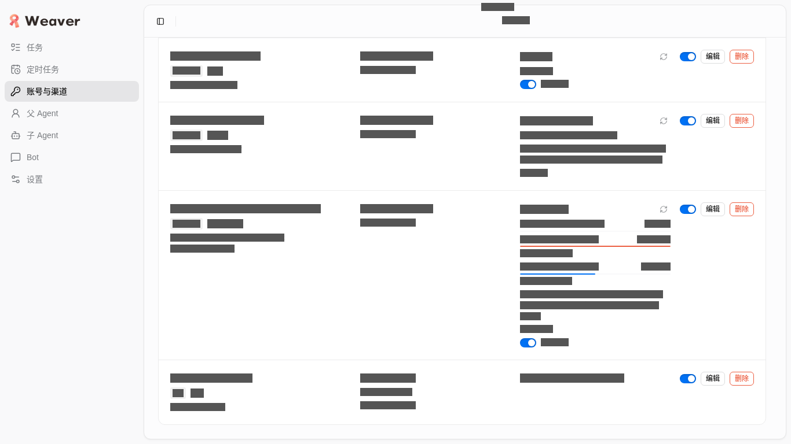
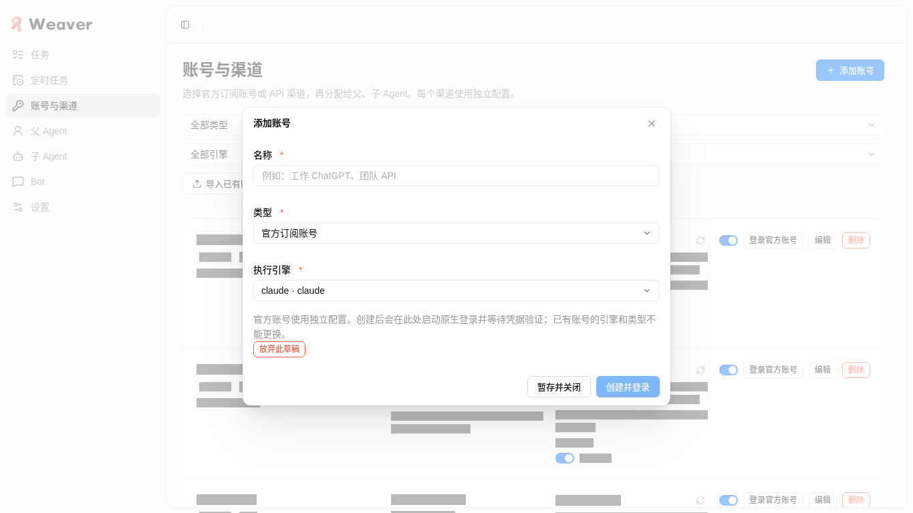
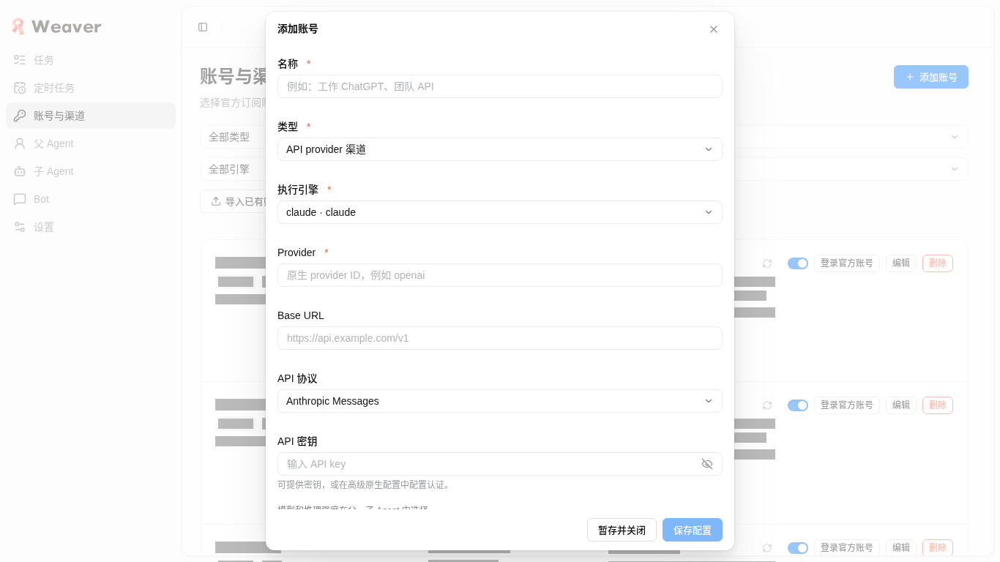
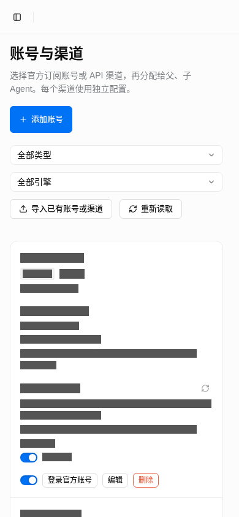
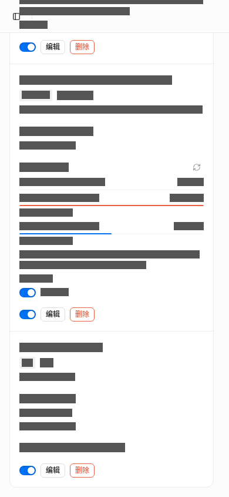
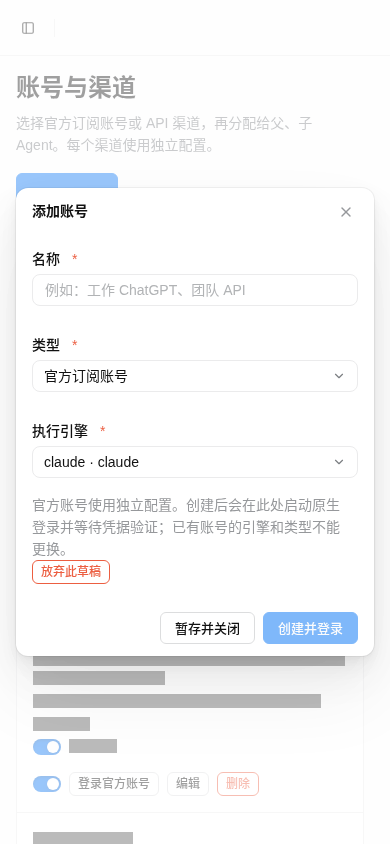
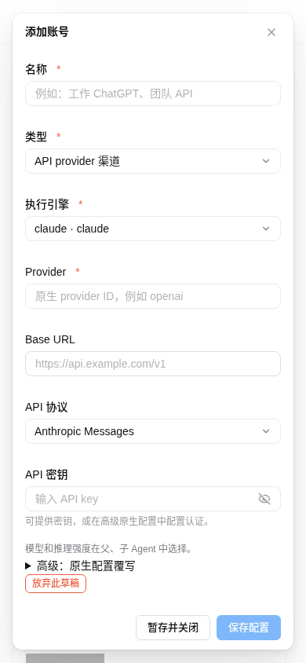

URL：http://127.0.0.1:4737/#/channels。weaver.service 新 PID 1442954，实际重启开始时间 2026-10-25T06:58:09.196Z（当地 02:58:09 EDT）。切换前 PID 1435318。dataDir /home/mocha/.local/share/weaver，port 4737。生产 DB inode 1907011 保持；schema 13、integrity ok；未声称迁移到 14。
| 二进制 | SHA256 |
|---|---|
| oldSha256 | 2cbf137f8356101c242e4a4ba22aab0c879315ee69a201ac196dd8fda9aeb236 |
| preparedSha256 | 3b980815c075d6f496f25711099d65676a881e35d5c7422337df7111c4a9e7be |
| installedSha256 | 3b980815c075d6f496f25711099d65676a881e35d5c7422337df7111c4a9e7be |
| runningExeSha256 | 3b980815c075d6f496f25711099d65676a881e35d5c7422337df7111c4a9e7be |
index、主要 JS/CSS 均实取 HTTP 200，SHA 与构建 manifest 相同；各资源 SHA 见 JSON。当前 /proc 实际 exe SHA 与 prepared、installed SHA 相同。
持久冷备（保留）：/home/mocha/.local/share/weaver/backups/local-ae45390-20261025T065808.227219Z。以冷备为基线，独立只读比较历史 task 身份/owner/package、账号配置与 DB secret、角色/IM 配置和 receipt/event/artifact 身份，全部保留；正常追加的控制面任务不判为损坏。切换时的私有根元数据与 kv 绑定比较也全部通过，详见 JSON 的 switchPreservation。
账号 13 个，hasCredentials=true 4 个、false 9 个；匿名逐项实际值在 JSON。七个 engine 的公开读取 enabled 全为 true。飞书 enabled=true、appSecretConfigured=true，owner binding 保留，connection=connected、agentState=ready、busySessions=0；无主动重连或消息。
既有 4738：PID 1381285，startedAt 2026-10-25T06:10:24.060Z，DB inode 1991412、integrity ok。两项既有服务和所有持久数据、备份均保留。
自有 Google Chrome / session weaver-upgrade-ae45390；1366×768 与 390×844。添加账号类型明确区分官方订阅与 API，底部操作可见；仅打开、切换表单类型并关闭。前后账号数量及旧行内容一致，未创建记录。截图均先量几何再用 DOM 遮盖账号文本、邮箱和私有 ID；遮罩不用于改变测量结果。
| 原生输入 | scrollTop | 最后一行 / 视口 |
|---|---|---|
| 桌面 wheel (900,668), deltaY=10000 | 1829 / 1829 | 622.2–734.0px；末行完整可见 |
| 桌面 PageDown ×6（内容区先获焦） | 1829 / 1829 | 622.2–734.0px；末行完整可见 |
| 窄屏 wheel (355,744), deltaY=10000 | 4335 / 4335 | 561.9–827.5px；末行完整可见 |
没有以 JS 强设滚动位置。祖先 clip 与滚动前后几何在 JSON；两视口无页面水平溢出。原生 Close 最终在两个视口都成功取消；初次 discard 和未返回顶部的 Add 尝试未算作成功证据。
观察期间：加载 HTTP 错误 0、网络加载失败 0、console error 0、pageerror 0。正常后台 command/listTasks 轮询单独计数在 JSON；未保存完整请求体、HAR 或凭据。
| switchCompleted | 通过 |
| binaryHashesMatch | 通过 |
| rendererMatchesBuild | 通过 |
| historyAndPrivateBindingsRetained | 通过 |
| accountsUnchanged | 通过 |
| sevenEnginesReadEnabled | 通过 |
| imRecovered | 通过 |
| test4738Preserved | 通过 |
| noIndependentEngineNavigation | 通过 |
| desktopWheelLastRow | 通过 |
| desktopPageDownLastRow | 通过 |
| mobileWheelLastRow | 通过 |
| officialApiChoices | 通过 |
| cancelBothViewports | 通过 |
| desktopOfficialFooterVisible | 通过 |
| desktopApiFooterVisible | 通过 |
| mobileOfficialFooterVisible | 通过 |
| mobileApiFooterVisible | 通过 |
前次 real-delivery-verified 报告保留其当时“生产 4737 未部署”的历史事实；其首次导入与 hi 证据不冒充本次生产再次 fresh 导入。本次完整脱敏 JSON。








自有 Chrome 已关闭，专属 profile 已删除，精确进程核对无遗留。scratch 仅保留 result.json 交接收据，临时 PDF、打印文本与 helper 已清理。生产 4737 PID 1442954、持久测试 4738 PID 1381285、全部持久数据与冷备保留。无提交、推送或发布。
报告已通过 file:// 实际 390px 检查（scrollWidth=390、核心结论及未测项可读、无坏图、无外部依赖）；实际生成 8 页 PDF 并提取核对核心与限制文字。10 个本地附件链接均存在；生产 URL 已实取 HTTP 200。打印中间文件已删除。